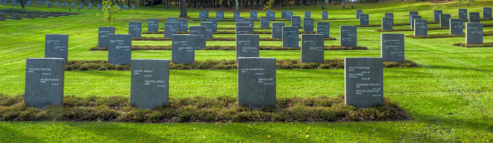

ОРГАНИЗАЦИЯ ПОХОРОН

Организация похорон
Рутаульная служба Ангел предлагает полный комплекс ритуальных услуг по организации похорон. Специалисты предприятия берут на себя решение всех задач, связанных с погребением. Квалифицированная организация похорон дает возможность близким спокойно проститься с умершим.
- Оформление документов Подробнее
- Выбор места для погребения и способа захоронения Подробнее
- Покупка ритуальных принадлежностей на похороны Подробнее
- Выбор похоронного транспорта Подробнее
Опытные специалисты возьмут на себя всю организацию похорон. Они предоставят необходимые услуги на высоком профессиональном уровне. Благодаря этому вы сможете избавить себя и своих близких от множества хлопот, связанных с траурной церемонией.
Похороны эконом-класса – наиболее востребованный вариант ритуальных услуг в Москве. Смерть близкого человека всегда неожиданна, к ней нельзя подготовиться заранее. Но похороны, вне зависимости от затрат на них, должны выглядеть достойно. При организации траурной церемонии по тарифу «Эконом» мы предлагаем полный пакет помощи при минимальных затратах.